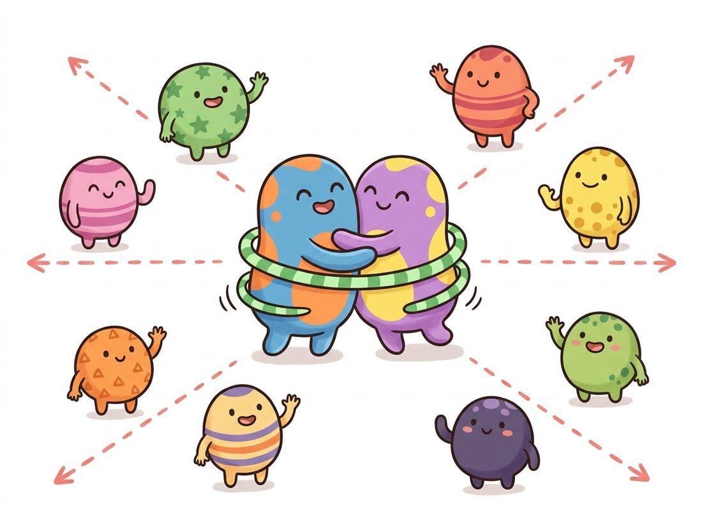

"Show me the same dog cropped, recolored, and flipped, and I will swear it is the same dog. Show me a different dog, and I will fight you on it. This is the entire personality I was trained to have, and it turns out to be most of what intelligence looks like."
A Contrastive Encoder With Strong Opinions About Sameness
Contrastive learning replaces hand-designed pretext puzzles with a single, powerful objective: two augmented views of the same image must land close together in feature space, and views of different images must land far apart. Solving this forces the network to encode what is invariant about an image (its content) and discard what the augmentations change (crop, color, blur). The objective is a softmax over similarities called InfoNCE, and the design decisions that actually move the needle are the choice of augmentations, the number of negatives, and the temperature. This section builds the loss from scratch, shows why SimCLR needed enormous batches to supply enough negatives, and shows how MoCo's momentum encoder and memory queue gave the same number of negatives without the batch.
The pretext tasks of Section 25.1 each encoded one specific assumption about images (orientation, spatial layout, color semantics) and learned only what that assumption exposed. Contrastive learning generalizes the idea into a single objective that subsumes them: instead of predicting a chosen transformation, predict which images are the same under transformation. The goal, as throughout the chapter, is the learned descriptor itself, the data-driven successor to the hand-crafted SIFT and ORB vectors of Chapter 10. We will define the notion of a positive pair and negative pairs, write down the InfoNCE loss, implement SimCLR end to end on the ResNet backbones of Chapter 20, and then dissect MoCo's two engineering ideas that made contrastive learning practical without a supercomputer. The features this produces are the ones the linear probe of Section 25.1 finally rewards, and they set up the negative-free methods of Section 25.3.
1. Positives, Negatives, and the InfoNCE Loss Intermediate
Start with one image $x$. Apply two independent random augmentations to it, producing two views $\tilde{x}_a$ and $\tilde{x}_b$. These form a positive pair: they show the same content, so their representations should be close. Every other image in the batch, under any augmentation, is a negative for this pair: different content, so its representation should be far away. The network's job is to pull the positive pair together and push the negatives apart, in a learned feature space. The illustration below gives the intuition as a magnet-and-spring dance floor, and Figure 25.2.1 shows the two-branch structure that produces these embeddings.

The loss that implements pull-together-push-apart is InfoNCE (also called NT-Xent in SimCLR). For a positive pair $(z_i, z_j)$ with cosine similarity $\text{sim}(u, v) = u^\top v / (\|u\|\|v\|)$ and temperature $\tau$, the loss for view $i$ is
Read this as a classification problem with $2N - 1$ candidates: among all the other embeddings in the batch, which one is the true partner of $z_i$? The condition $k \neq i$ excludes only $z_i$ comparing to itself, so the denominator sums over the positive partner $z_j$ together with every negative. That is why the numerator's term reappears inside the denominator. Minimizing the loss maximizes the positive similarity relative to the negatives. The temperature $\tau$ (typically around $0.1$) sharpens the softmax: small $\tau$ makes the model focus on the hardest negatives, the ones already close to the positive. This is the same softmax-over-similarities structure that will reappear, almost unchanged, as the CLIP objective in Section 25.4.
The reason contrastive learning needs no labels is that the negatives require no annotation. Any two images that are not the same image are, with overwhelming probability, different content, so the batch itself supplies all the negatives for free. The consequence, though, is that quality scales with the number of negatives: more negatives means a harder, more informative classification problem and a sharper representation. This single fact explains the entire engineering arc of the section. SimCLR gets negatives by using a giant batch; MoCo gets them from a queue. Everything else is detail.
Once you have simclr_loss from the next subsection, spend two minutes turning the one knob that matters most here. Hold the embeddings fixed (z = torch.randn(8, 128) with a fixed seed) and call the loss across a sweep of temperatures, for example 0.02, 0.07, 0.1, 0.5, and 1.0, printing the loss for each. Watch two things: the loss value shifts, and (if you also print the softmax row (z @ z.t() / tau).softmax(1) for one positive pair) the probability mass concentrates on the single hardest negative as $\tau$ shrinks and spreads almost uniformly as $\tau$ grows. That contrast is the whole intuition behind the temperature in one print loop: a small $\tau$ makes the objective obsess over the nearest competing image, a large $\tau$ treats all negatives as roughly equal. You are observing why SimCLR settles near $\tau \approx 0.1$ rather than reading it as a fact.
2. SimCLR: Augmentation Is the Architecture Intermediate
SimCLR (Chen et al., 2020) is the cleanest contrastive framework: a shared encoder, a small projection head (a two-layer multilayer perceptron, or MLP, that maps features to the space where the loss is computed and is discarded afterward), and the InfoNCE loss over a large batch. Its most important and most surprising finding is that the composition of data augmentations is the real design decision. The single most valuable augmentation pair is random cropping combined with random color distortion. Cropping alone lets the network cheat by matching color histograms between the two views; color distortion alone lets it cheat by matching spatial layout. Only together do they force the network onto content. The augmentation pipeline you learned in Chapter 21 is here promoted from a regularizer to the heart of the method.
The code below implements the SimCLR loss for a batch of $2N$ embeddings (two views per image, stacked). It builds the full similarity matrix, masks out self-comparisons, and applies cross-entropy with the positive partner as the target.
import torch
import torch.nn.functional as F
def simclr_loss(z, temperature=0.1):
"""z: (2N, d) = N images x 2 views, stacked as [view_a(0..N-1), view_b(0..N-1)]."""
N2 = z.size(0)
N = N2 // 2
z = F.normalize(z, dim=1) # cosine sim = dot product of unit vectors
sim = z @ z.t() / temperature # (2N, 2N) all pairwise similarities
sim.fill_diagonal_(float("-inf")) # an embedding is not its own negative
# The positive of row i is its other view: i<->i+N (and i+N<->i).
targets = torch.arange(N2, device=z.device)
targets = (targets + N) % N2 # partner index for every row
return F.cross_entropy(sim, targets) # InfoNCE = cross-entropy over candidates
torch.manual_seed(0)
z = torch.randn(8, 128) # 4 images x 2 views, 128-d embeddings
print("SimCLR loss:", round(simclr_loss(z).item(), 4))
# SimCLR loss: 2.0794 (near log(2N-1)=log7 for random embeddings, as expected)(targets + N) % N2 trick names each row's positive partner; fill_diagonal_ removes the trivial self-match. The printed loss near $\log 7$ confirms random embeddings score at chance over the seven candidates.This is correct but expensive in one specific way: the similarity matrix is $2N \times 2N$, and the quality depends on $N$ being large. SimCLR's published results used batch sizes up to 4096, which requires many accelerators working in concert simply to hold one step in memory. That hardware requirement is precisely the problem MoCo solves.
SimCLR's projection head is thrown away after pretraining, and using the features from before the projection head for downstream tasks works noticeably better than using the projected embeddings the loss was computed on. The contrastive objective apparently destroys some information useful for classification (color, orientation) in service of invariance, so you stop one layer short of where the loss lives. It is a rare case where the layer you optimized is not the layer you want.
3. MoCo: A Momentum Encoder and a Queue Advanced
MoCo (He et al., 2020) reframes contrastive learning as building a dictionary lookup. One view (the query) is encoded by the main encoder; the other views and many past images (the keys) live in a dictionary, and the query must match its positive key against all the others. The insight is that the dictionary of keys does not need to come from the current batch. If we keep a queue of key embeddings from recent batches, we get tens of thousands of negatives while the batch stays small enough for a single machine. MoCo decouples the number of negatives from the batch size, the constraint that made SimCLR so hardware-hungry.
This raises a problem: if the encoder's weights change every step, then keys computed several batches ago were produced by a stale, inconsistent encoder, and comparing them to a fresh query is meaningless. MoCo's fix is the momentum encoder: a second copy of the encoder whose weights $\theta_k$ are not trained by gradient descent but are updated as a slow exponential moving average of the query encoder's weights $\theta_q$,
With $m$ close to one, the key encoder evolves slowly and smoothly, so keys produced batches apart remain mutually consistent, yet it still tracks the improving query encoder. Figure 25.2.2 contrasts the two designs side by side.
The momentum update and queue are short to express in code. Note that the key encoder receives no gradients; it is updated only by the moving average.
import torch
import torch.nn.functional as F
@torch.no_grad()
def momentum_update(query_enc, key_enc, m=0.999):
"""Key encoder = slow EMA of the query encoder. No gradients flow here."""
for q_param, k_param in zip(query_enc.parameters(), key_enc.parameters()):
k_param.data.mul_(m).add_(q_param.data, alpha=1 - m) # k <- m*k + (1-m)*q
def moco_loss(q, k, queue, temperature=0.07):
"""q, k: (N, d) query and positive-key embeddings; queue: (K, d) negative keys."""
q, k = F.normalize(q, dim=1), F.normalize(k, dim=1) # L2-normalize for cosine sim
queue = F.normalize(queue, dim=1)
l_pos = (q * k).sum(1, keepdim=True) # (N, 1) positive similarity per query
l_neg = q @ queue.t() # (N, K) similarity to every queued key
logits = torch.cat([l_pos, l_neg], dim=1) / temperature # positive is column 0
targets = torch.zeros(q.size(0), dtype=torch.long, device=q.device)
return F.cross_entropy(logits, targets) # classify the positive against K negatives
q = torch.randn(4, 128); k = torch.randn(4, 128); queue = torch.randn(4096, 128)
print("MoCo loss:", round(moco_loss(q, k, queue).item(), 4))
# MoCo loss: 8.3... (near log(4097) for random embeddings: many negatives, harder task)momentum_update runs under no_grad because the key encoder is never trained directly.After each step the current batch's keys are enqueued and the oldest keys dequeued, keeping a rolling window of recent, mutually-consistent negatives. MoCo v2 later adopted SimCLR's MLP projection head and stronger augmentation, and the two lines of work effectively merged. The practical lesson, though, is durable, and worth memorizing as a one-line mental model: contrastive learning needs negatives, not a giant batch; a queue buys negatives when you cannot buy GPUs.
When BYOL first showed that contrastive learning works with no negatives at all, the result was so surprising that researchers suspected a hidden mechanism was secretly doing the contrasting. A widely-read 2020 blog post argued the secret ingredient was batch normalization, which subtly leaks batch statistics and acts like an implicit comparison to other images. The BYOL authors responded with a careful ablation showing the method still works when batch norm is replaced with group norm plus weight standardization, no batch statistics involved. The momentum target and stop-gradient, not a sneaky normalization trick, are what prevent collapse. A rare case where the community debugged a paper in public and the paper survived.
Who: the perception team at a mid-size e-commerce company, 2021, with roughly twelve million unlabeled product photographs and only about forty thousand human-categorized examples. Situation: they wanted a strong backbone for several downstream tasks (category classification, near-duplicate detection, attribute tagging) but could not label twelve million images. Problem: their largest available training node could fit a batch of only 256 images, far below SimCLR's 4096, and a small batch starved SimCLR of negatives, leaving its linear-probe accuracy well behind a supervised baseline. Decision: they switched to MoCo with a 65,536-entry queue, so the effective number of negatives rose from 511 (the SimCLR batch) to over 65,000 without changing the hardware, and they tuned the augmentation to include the crop-plus-color-jitter pair SimCLR identified as essential. Result: the MoCo backbone's linear-probe accuracy on their forty-thousand labeled examples matched supervised pretraining and, used as a near-duplicate detector through cosine similarity of features, outperformed their previous hand-tuned hashing pipeline. Lesson: the number of negatives, not the batch size, is what contrastive learning actually needs; MoCo's queue is the way to buy negatives when you cannot buy GPUs.
The loss, momentum encoder, queue, and augmentation pipeline above are all provided by self-supervised libraries. With lightly, a full MoCo training step is a few lines:
# Assemble a full MoCo step from prebuilt parts: the validated augmentation,
# the InfoNCE loss, and the memory-bank queue that holds the negatives.
from lightly.loss import NTXentLoss
from lightly.transforms import MoCoV2Transform
# The crop+color-jitter+blur augmentation SimCLR identified, prebuilt:
transform = MoCoV2Transform(input_size=224)
criterion = NTXentLoss(temperature=0.1, memory_bank_size=(65536, 128)) # queue built in
# loss = criterion(query_embeddings, key_embeddings)lightly. MoCoV2Transform supplies the crop-plus-color-jitter augmentation, and NTXentLoss with memory_bank_size=(65536, 128) rolls the InfoNCE math and the 65,536-entry queue of Code Fragment 2 into one object. The hand-written loss and momentum update become a configuration choice.The library supplies the validated augmentation recipe (replacing roughly twenty lines of torchvision.transforms tuning), the memory-bank queue, and the InfoNCE math, and ships matching implementations of SimCLR, MoCo, BYOL, and DINO behind one interface. What you hand-wrote across this section becomes a configuration choice; the from-scratch code exists so the configuration is not a mystery.
The negatives that drove this entire section turned out to be optional. BYOL (Grill et al., 2020) and SimSiam (Chen and He, 2021) showed that a network can learn strong representations with positive pairs only, no negatives at all, as long as a momentum target encoder and a stop-gradient (blocking the gradient from flowing back through the target branch, so it acts as a fixed reference within the step) prevent the trivial collapse to a constant output. This reframed the field: the momentum encoder MoCo introduced for consistency turned out to be the key ingredient for a whole family of negative-free methods, and DINO in Section 25.3 takes this to its conclusion. As of 2024 to 2026 the dominant self-supervised backbones (DINOv2) combine this negative-free self-distillation with masked modeling rather than classical contrastive learning, though contrastive learning remains the heart of the language-supervised CLIP of Section 25.4, where the negatives are other captions and come naturally.
4. The Formal Objectives: NT-Xent and InfoNCE Written Out Advanced
Sections 1 through 3 built the intuition and the working code, but a graduate reader needs the objectives stated in the exact form the original papers optimize, because the bookkeeping (which indices are summed, what counts as a negative, how positive pairs are averaged) is where contrastive methods quietly differ from one another. This subsection writes both losses out fully, names every term, and connects the temperature and the indicator to the geometry they control. The notation matches Chen et al. (2020) for SimCLR and He et al. (2020) for MoCo so the formulas below can be read directly against the papers.
4.1 SimCLR's NT-Xent, Indexed Over the Full Batch
SimCLR draws a minibatch of $N$ images and applies two independent augmentations to each, producing $2N$ views. Let $z_k$ be the L2-normalized projection-head output for view $k$, and let $\text{sim}(u,v) = u^\top v / (\|u\|\,\|v\|)$ be cosine similarity. For a positive pair $(i,j)$, meaning $i$ and $j$ are the two augmentations of one image, the per-pair loss is
The indicator $\mathbb{1}_{[k \neq i]}$ excludes exactly one term from the denominator: the comparison of $z_i$ with itself. It does not exclude the positive partner $z_j$. This is the single subtle point of the formula. The denominator runs over all $2N - 1$ other views, which is the positive $z_j$ plus the $2N - 2$ negatives (the other $N-1$ images, each in two views). Dropping the self-term $k=i$ is mandatory because $\text{sim}(z_i, z_i)/\tau = 1/\tau$ is large and constant, and leaving it in would let the model satisfy the objective by matching itself, which carries no learning signal. Keeping $z_j$ in the denominator is what makes the expression a genuine softmax classification: the numerator is one entry of the denominator, so $\ell_{i,j}$ is the negative log-probability assigned to the correct partner among all $2N-1$ candidates.
The full NT-Xent loss (normalized temperature-scaled cross-entropy) is the average of $\ell_{i,j}$ over all positive pairs, counting both directions, because $\ell_{i,j} \neq \ell_{j,i}$ in general (each fixes a different anchor and therefore a different denominator):
where the pair $(2k-1, 2k)$ indexes the two views of the $k$-th image. The two directions $\ell_{i,j}$ and $\ell_{j,i}$ are both included, giving $2N$ positive-pair terms over $N$ images, hence the $1/2N$ normalization. This is exactly what the F.cross_entropy(sim, targets) call in Code Fragment 1 computes: cross-entropy over a row already averages over all $2N$ rows, and the (targets + N) % N2 mapping supplies each row's positive partner in the other direction automatically.
Temperature $\tau$ rescales every similarity before the softmax, so it controls how sharply the loss distinguishes the positive from the negatives. Write the gradient intuition: the softmax assigns probability $p_k \propto \exp(\text{sim}(z_i,z_k)/\tau)$ to candidate $k$, and the gradient pushes hardest on the negatives with the largest $p_k$. A small $\tau$ (SimCLR uses $\tau \approx 0.1$, sometimes $0.07$) sharpens the distribution so that only the few hardest negatives, the ones already close to $z_i$ in feature space, receive significant gradient; the model spends its capacity separating near-collisions. A large $\tau$ flattens the distribution toward uniform, treating all negatives as equally important and producing weaker, less discriminative features. Temperature is therefore not a minor hyperparameter: it sets the effective hardness of the negative mining that happens implicitly inside the softmax.
4.2 MoCo's InfoNCE Over a Queue
MoCo (He et al., 2020) writes the same softmax but reorganizes which embeddings supply the positive and the negatives. A query $q$ has exactly one positive key $k_+$ (the matching view of the same image, encoded by the momentum encoder) and a queue of $K$ negative keys $\{k_0, k_1, \ldots, k_K\}$ accumulated from previous batches. With dot-product similarity on normalized embeddings and temperature $\tau$, the InfoNCE loss for the query is
where the sum in the denominator runs over the positive $k_+$ together with all $K$ queued negatives (in MoCo's indexing $k_0$ denotes the positive, so the $K+1$ denominator terms are one positive plus $K$ negatives). This is a $(K+1)$-way softmax classification: identify the positive key among $K+1$ candidates. The structural difference from NT-Xent is only the source of the candidates. SimCLR's denominator is the current batch, which couples the number of negatives to batch size; MoCo's denominator is a FIFO queue, which decouples the number of negatives ($K$, often $65{,}536$) from the batch size entirely. The query encoder is updated by SGD on $\mathcal{L}_q$, while the key (momentum) encoder is never differentiated and instead tracks the query encoder by the exponential moving average of Section 3,
The large $m$ is what makes the queue valid: keys enqueued many steps ago were produced by a key encoder that has barely moved since, so comparing a fresh query against old keys is meaningful. The FIFO queue then buys a large, consistent negative set without a large batch, which is the entire engineering payoff of MoCo over SimCLR.
Input: minibatch of $N$ images $\{x_1, \ldots, x_N\}$; augmentation distribution $\mathcal{T}$; encoder $f$; projection head $g$; temperature $\tau$.
- For each image $x_n$, sample two augmentations $t, t' \sim \mathcal{T}$ and form views $\tilde{x}_{2n-1} = t(x_n)$ and $\tilde{x}_{2n} = t'(x_n)$, giving $2N$ views.
- Encode and project: $h_k = f(\tilde{x}_k)$, then $z_k = g(h_k)$, for $k = 1, \ldots, 2N$.
- L2-normalize: $z_k \leftarrow z_k / \|z_k\|$.
- Compute the $2N \times 2N$ similarity matrix $S_{ik} = \text{sim}(z_i, z_k)/\tau$ and set the diagonal $S_{ii} = -\infty$ (mask self-comparisons).
- For each row $i$, the target column is its positive partner; accumulate $\ell_{i,j} = -\log \text{softmax}(S_{i,:})_j$.
- Average over all $2N$ rows to get $\mathcal{L}_{\text{NT-Xent}}$.
- Backpropagate and update $f$ and $g$ by one optimizer step. The features $h$ (before $g$) are kept for downstream use; $g$ is discarded after pretraining.
The PyTorch block below implements the NT-Xent numerator-and-denominator bookkeeping explicitly, rather than relying on F.cross_entropy as Code Fragment 1 did, so the correspondence to $\ell_{i,j}$ is line for line. It is the same loss, written to expose every term of the formula.
import torch
import torch.nn.functional as F
def nt_xent(z, temperature=0.1):
"""z: (2N, d), stacked as [view_a(0..N-1), view_b(0..N-1)]. Returns NT-Xent loss."""
N2 = z.size(0)
N = N2 // 2
z = F.normalize(z, dim=1) # unit vectors -> dot = cosine sim
sim = (z @ z.t()) / temperature # (2N, 2N): S_ik = sim(z_i, z_k)/tau
# Denominator: sum over k != i (exclude only the self-term, keep the positive).
self_mask = torch.eye(N2, dtype=torch.bool, device=z.device)
sim = sim.masked_fill(self_mask, float("-inf")) # 1_{k != i}: drop k = i only
log_denom = torch.logsumexp(sim, dim=1) # log sum_{k!=i} exp(S_ik)
# Numerator: each row i pairs with its other view (i <-> i+N).
pos_idx = (torch.arange(N2, device=z.device) + N) % N2
log_num = sim[torch.arange(N2), pos_idx] # S_{i, j} = sim(z_i, z_j)/tau
per_pair = -(log_num - log_denom) # l_{i,j} = -log( exp(num) / denom )
return per_pair.mean() # average over all 2N positive pairs
torch.manual_seed(0)
z = torch.randn(8, 128) # 4 images x 2 views, 128-d
print("NT-Xent loss:", round(nt_xent(z).item(), 4)) # ~2.08, near log(2N-1)=log 7 at chancemasked_fill with the identity mask implements the indicator $\mathbb{1}_{[k \neq i]}$ (only the self-term is removed, the positive stays in the denominator); logsumexp is the log-denominator; the (arange + N) % N2 index picks the positive partner $z_j$ for the numerator. The result matches the F.cross_entropy form of Code Fragment 1 because cross-entropy is exactly this log-softmax-and-gather.NT-Xent and MoCo's InfoNCE are the same objective, a temperature-scaled softmax that assigns high probability to the positive among many candidates. They differ in one design axis only: where the candidates come from. SimCLR reads them from the current batch (so more negatives means a bigger batch); MoCo reads them from a momentum-maintained queue (so more negatives is just a longer queue). Once you see the shared softmax skeleton, the entire contrastive family, including CLIP's image-text version in Section 25.4, reduces to choosing the encoder, the positive, and the negative pool.
These contrastive objectives are one branch of self-supervision, the branch that learns by explicit comparison against negatives. They are not the only way to avoid labels. Section 25.3 develops two alternatives that need no negatives at all: DINO learns by self-distillation, matching a student network's output distribution to a momentum teacher's on different views, and MAE learns by masked reconstruction, predicting hidden image patches from visible ones. Both replace the push-against-negatives mechanism with a different anti-collapse device. Looking further ahead, the JEPA family of Chapter 36 predicts in latent space rather than pixel or probability space, and it does so against an EMA target encoder that is exactly MoCo's momentum encoder repurposed: the same $\theta_k \leftarrow m\theta_k + (1-m)\theta_q$ update, now providing a stable prediction target instead of consistent negatives. The momentum encoder introduced here for one reason, keeping a queue consistent, turns out to be a load-bearing component across self-supervised learning.
Chen, T., Kornblith, S., Norouzi, M., & Hinton, G. (2020). A Simple Framework for Contrastive Learning of Visual Representations. Proceedings of the 37th International Conference on Machine Learning (ICML). arXiv:2002.05709.
Introduces SimCLR and the NT-Xent loss, and establishes that the composition of data augmentations (random crop plus color distortion), a learnable nonlinear projection head, large batch sizes, and many training steps are the levers that make simple contrastive learning match supervised pretraining on a linear probe. The paper's systematic ablation of augmentations is the source of the crop-plus-color finding used throughout this section.
He, K., Fan, H., Wu, Y., Xie, S., & Girshick, R. (2020). Momentum Contrast for Unsupervised Visual Representation Learning. Proceedings of the IEEE/CVF Conference on Computer Vision and Pattern Recognition (CVPR). arXiv:1911.05722.
Reframes contrastive learning as dynamic dictionary lookup and introduces the two ideas that decouple negative-set size from batch size: a FIFO queue of $K$ negative keys and a momentum (EMA-updated) key encoder $\theta_k \leftarrow m\theta_k + (1-m)\theta_q$ with $m = 0.999$ that keeps queued keys mutually consistent. This made strong contrastive pretraining feasible on commodity hardware without SimCLR's 4096-image batches.
SimCLR found that random cropping alone, or color distortion alone, gives much weaker features than the two combined. Explain the shortcut the network can exploit when only cropping is used, and the different shortcut available when only color distortion is used. Then argue why composing the two removes both shortcuts simultaneously, and connect this to the pretext-task shortcut failure from Section 25.1.
Using the moco_loss code, run a small experiment: fix the batch size at 64 and vary the queue length over the values 128, 1024, 8192, and 65536, training a small ResNet on an unlabeled image set for a fixed number of steps each time. Linear-probe each resulting backbone and plot probe accuracy against queue length. Write one paragraph relating the curve you observe to the Key Insight that contrastive quality scales with the number of negatives, and note where the curve flattens.
The momentum coefficient $m$ controls how fast the key encoder tracks the query encoder. Derive what happens at the two extremes: $m = 0$ (key encoder equals query encoder every step) and $m = 1$ (key encoder never updates). Explain why $m = 0$ reintroduces the consistency problem the momentum encoder was meant to fix, and why $m = 1$ makes the keys useless over time. Given that MoCo uses $m \approx 0.999$, estimate roughly how many steps it takes for the key encoder to reflect a given query-encoder update, and relate this to the queue length.
The denominator of NT-Xent sums over the other views in the current batch, while MoCo's InfoNCE sums over a queue of $K$ keys. Using the Key Insight that contrastive quality scales with the number of negatives, explain in your own words why a small batch (say $N = 64$) starves SimCLR of negatives, and quantify exactly how many negatives a batch of $N$ supplies for one anchor. Then explain how MoCo's queue provides the same number of negatives with $N = 64$ that SimCLR would need a batch of thousands to match, and state the one new component MoCo must add (and why) to make those queued negatives usable. Conclude with the one-line mental model from Section 3 in your own words.
The name InfoNCE comes from its connection to mutual information. Consider an anchor $z_i$ and a candidate set of one positive $z_j$ drawn from the joint distribution $p(z_i, z_j)$ and $K$ negatives drawn from the marginal $p(z)$. Show that the optimal critic for the NT-Xent softmax is proportional to the density ratio $p(z_j \mid z_i)/p(z_j)$, and use this to argue that the expected NT-Xent loss is bounded below by $-\log(K+1) + I(z_i; z_j)$, so that minimizing the loss maximizes a lower bound on the mutual information $I(z_i; z_j)$ between the two views. Then explain why this bound is loose when $K$ is small (the $\log(K+1)$ cap limits how much mutual information the objective can certify), giving a second, information-theoretic reason that more negatives help, complementing the geometric pull-and-push picture of Section 1. (Hint: follow the variational argument of van den Oord et al., 2018, Representation Learning with Contrastive Predictive Coding, arXiv:1807.03748.)